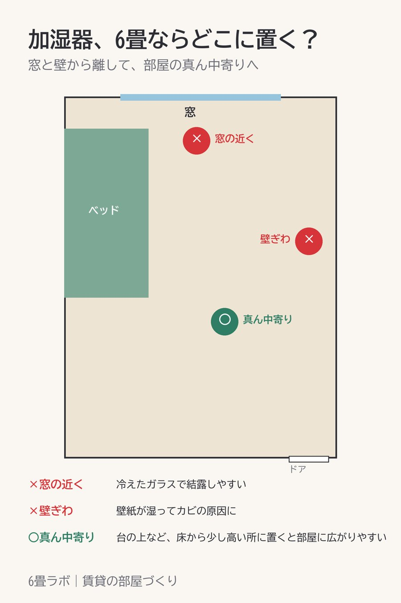

加湿器は、窓と壁から離して部屋の真ん中寄りに
この記事には楽天アフィリエイトのリンクが含まれています。

加湿器を窓のそばに置くと、朝、窓がびっしょりになることがあります。
冷えた窓ガラスのそばで加湿すると、湿気がガラスで水滴になって結露しやすくなります。壁ぎわも同じで、壁紙が湿るとカビの原因になります。
置くなら、窓と壁から少し離した部屋の真ん中寄り。床に直接置くより、台の上など少し高い所に置いたほうが、部屋全体に広がりやすいです。
選ぶときは、箱や商品ページに書いてある適用畳数を見ておきます。木造和室とプレハブ洋室の2つが書いてあることが多く、マンションの洋室ならプレハブ洋室の数字が6畳以上あるかを見ればいいです。
紹介した商品
- 【PR】タンク6Lのハイブリッド式加湿器(楽天市場)